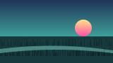
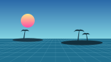
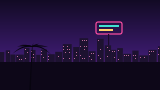
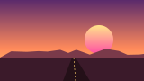

Neonshore is an unofficial, English-speaking fan hub for Rockstar’s return to Leonida. We keep a community atlas of the coast, link every news item to its official source, collect the trailers in one place, and draw original stream art for the players who broadcast it.
Pastel towers, packed beaches and a nightlife that never clocks out.

Original illustration by Neonshore
Wetlands
Grassrivers
Airboats, sawgrass and things that move under the water.

Original illustration by Neonshore
Islands
Leonida Keys
A string of bridges, bait shops and sunsets at the end of the road.

Original illustration by Neonshore
Port city
Port Gellhorn
Faded motels and a boardwalk that has seen better summers.

Original illustration by Neonshore
Industrial town
Ambrosia
Smokestacks, long highways and a small town that works for a living.
Original illustration by Neonshore
National park
Kalaga National Park
Trails, lookout points and plenty of places to go off grid.
Region names are as announced by Rockstar Games. Region artwork is original Neonshore illustration, not game footage; card descriptions are original fan commentary.
Official trailers, embedded from YouTube. These videos are official Rockstar Games trailers. They load from YouTube’s privacy-enhanced domain (youtube-nocookie.com) only after you press play. The poster images are original Neonshore illustrations.
••• Community
Built by players
A guide without the sign-up
Neonshore has no accounts, no mailing list and no comments. Everything here is readable by anyone, and the map comes from an open community project.
Neonshore is an unofficial fan guide to Rockstar’s next game, set in Leonida. It is not affiliated with Rockstar Games or Take-Two Interactive. The logo and editorial text are original; facts link to their official source.
Sources & credits
All illustrations and the 3D scene are original Neonshore work. Community map: YANIS V17 / GTA VI Mapping Community, GTADB.org & contributors, CC BY 4.0.
This site collects nothing: no accounts, forms, cookies or analytics. Fonts load from Google Fonts. Trailers load from youtube-nocookie.com only when you press play.